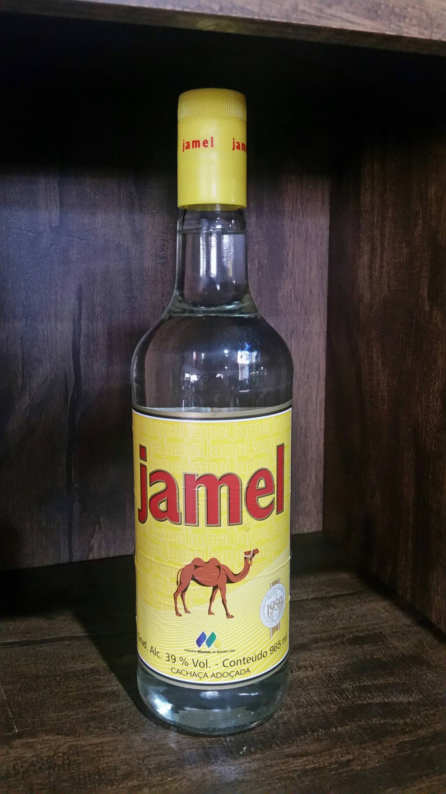

A Cachaça Jamel 965ml é feita com o caldo de cana-de-açúcar, sua coloração é branca e foi umas das pioneiras no Brasil, por isso hoje é reconhecida como uma das mais tradicionais, pode ser apreciada pura ou compondo drinks. Teor alcoólico de 39% vol. 